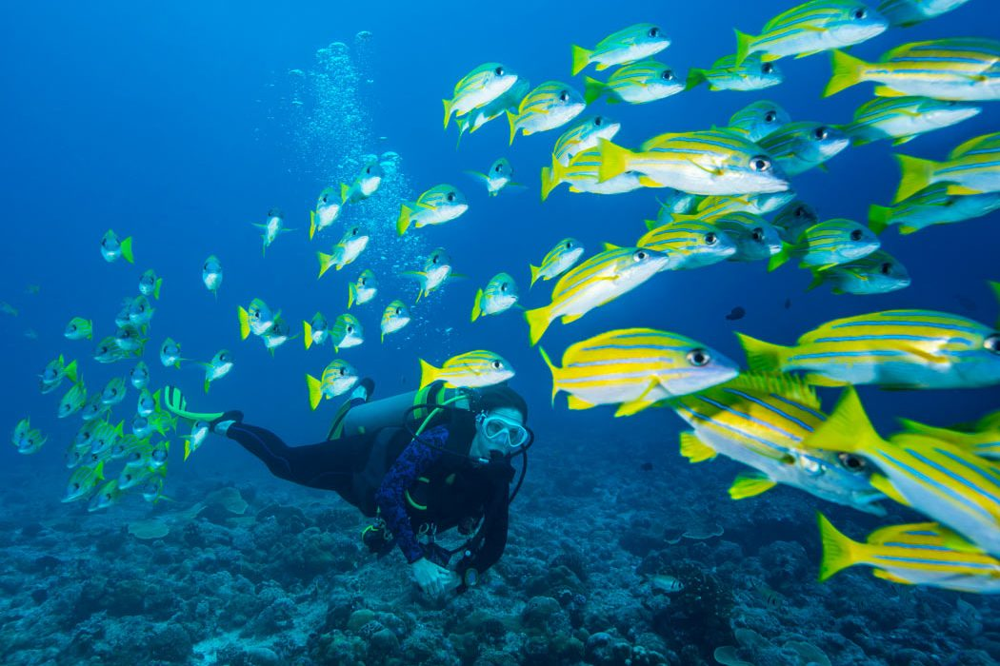
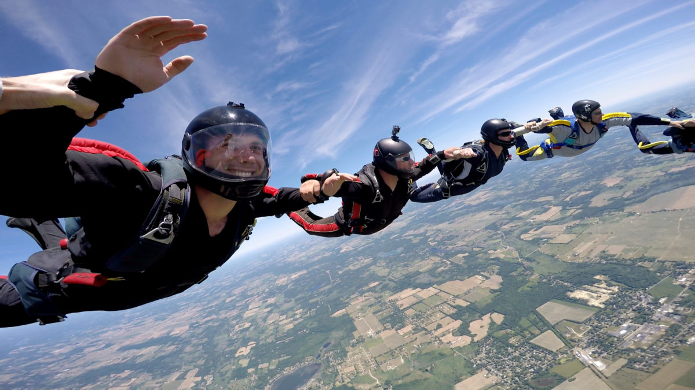

My favourite ones:
These are the sports that I like, and some usefull information about them:Football

Football is my favourite sport. I had played it a lot. Its one those games that requires a lot
of strength and
stamina and I am always ready to play it. While playing it, I feels a great. I had
enjoyed every moment of
playing it.
Cricket

Cricket is one of the games that I had played at the time when I was a kid.
It is also the most popular sport in India. The craze of
IPL and the crowd in the stadiums during the
IPL season was one of the amazing things to experience in India.
Scuba Diving

Although, I hadn't done it yet and also I don't know how to swim but its one of my wish or we say a
dream to Scuba dive.
I sometimes think about it that how does it feel to go underwater deep inside the ocean,
see fishes floating
around you and how the world under the see looks like.
If there's a chance to do it then I will never gonna miss it
at any cost.
Sky Diving

This is also a sport that I hadn't done it yet and its one of my wish to do atleast once in the lifetime.
I want to feel that air flowing around me at an incredible speed which would be an incredible experience.
I am thrilled about it and also sometimes had day dreamed about it. So let's see if I am going to get a chance to
do it or not.
Hope for the best!